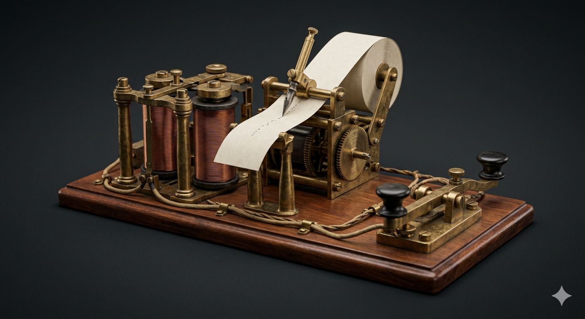
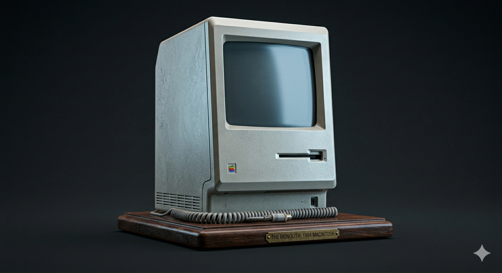

VIRTUAL CURATION
An Evolutionary Journey Through Connection

The dawn of near-instantaneous global signaling. Where code first conquered distance.

The transition into the synthesized era, where the signal becomes an extension of thought.